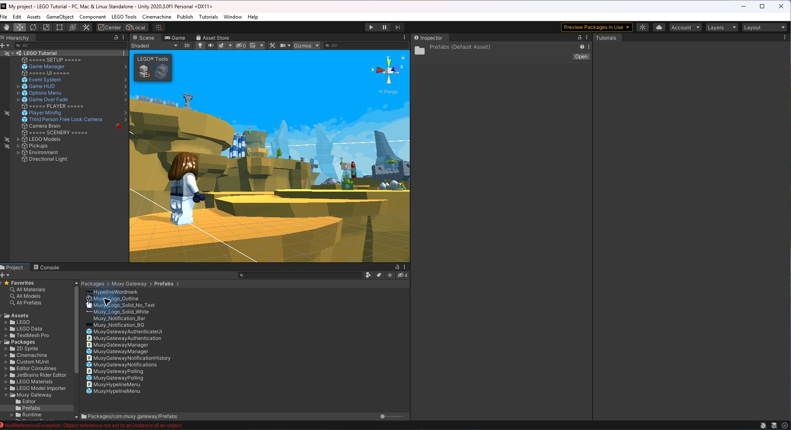
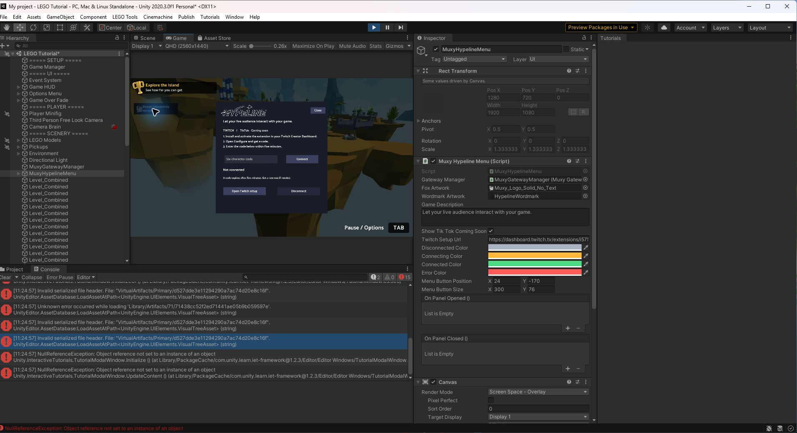
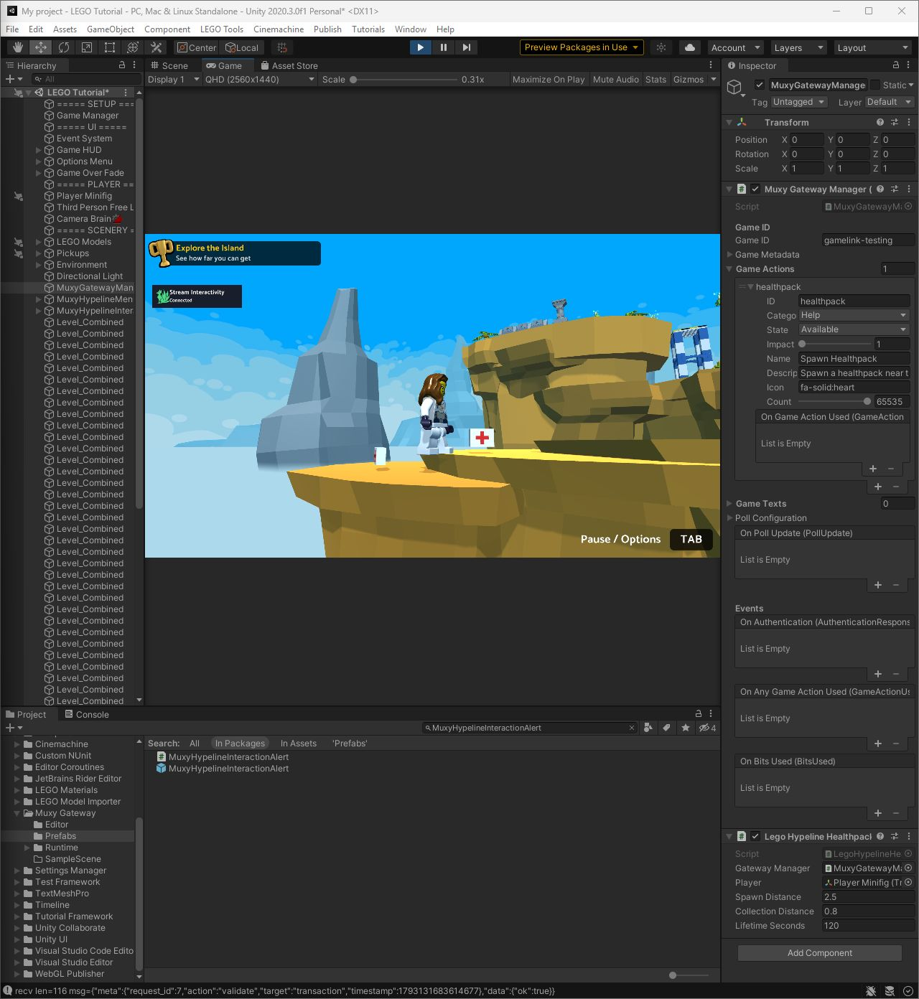

Bring your stream
into the game.
Add a creator connection button to your main menu, then show viewer interactions as they happen. Hypeline uses Muxy’s existing Gateway service and Twitch extension.
Get startedManager
Connects the game to Muxy and receives viewer actions.
Menu
Lets a streamer connect their Twitch channel in game.
Alert
Shows who sent an interaction and what they selected.
Install the Hypeline SDK
You’ll need a Unity desktop project, a Twitch broadcaster account with the Muxy Gateway extension, and a Game ID linked in its configuration. This guide uses the Hypeline checkout, which targets Unity 2020.3 or newer.
- Download the Hypeline branch ZIP and extract it to a stable folder outside your project’s
Assets. This is a branch snapshot, not a versioned release. - In Unity, open Window → Package Manager. From the + menu, choose Add package from disk and select the extracted SDK’s
package.json. - Wait for package resolution and compilation. Import TMP Essential Resources if prompted, then open Packages → Muxy Hypeline → Prefabs in the Project window.

Add the manager
Drag MuxyGatewayManager from the package’s Prefabs folder into the scene Hierarchy. Reuse an existing manager if your scene already has one; keep one active manager for this integration.
Select the manager and set Game ID to the exact ID shown under Linked Games in the broadcaster’s Twitch extension configuration. Set game metadata and configure the actions your game supports.
Hypeline keeps the existing manager and backend connection for compatibility with Muxy and existing Unity projects.
Add the main menu button
MuxyHypelineMenu creates a Stream Interactivity button, Twitch setup panel, and connection indicator for the creator.
- Drag
MuxyHypelineMenuinto your main-menu scene. Select it in the Hierarchy. - Drag your scene’s manager into the menu component’s Gateway Manager Inspector field before entering Play mode.
- Set Game Description to explain your viewer interactions. Adjust Menu Button Position, Menu Button Size, colors, and artwork to fit your game.
- Keep exactly one active EventSystem with an input module compatible with the project. The Hypeline prefab does not create one. Place the prefab under a screen-space Canvas, or allow it to create an overlay Canvas at runtime.


The TikTok label is a coming-soon placeholder; Twitch is the available connection. If replacing the older Gateway authentication UI, avoid adding a second connection interface or EventSystem accidentally.
Connect a Twitch channel
- In the broadcaster’s Twitch Creator Dashboard, install and activate the Muxy Gateway extension. In its Configure view, check the linked Game ID and select Get New Code.
- Enter Play mode in Unity. Select Stream Interactivity, enter the six-character code, and select Connect. Codes expire after five minutes; request a new one if necessary.
- Wait for the fox and status label to show Connected. Gray means disconnected, amber means connecting or reconnecting, green means connected, and red means a connection or authentication problem.

Test an actual viewer action separately to confirm your game receives and handles it.
Show interaction alerts
MuxyHypelineInteractionAlert listens to the manager and displays a viewer’s name and action over the game.
- Drag
MuxyHypelineInteractionAlertinto the scene where alerts should appear. Assign the same scene manager to its Gateway Manager field before Play mode. - In the Inspector, adjust Position, Size, background and accent colors. Place it under a screen-space Canvas or let it create an overlay Canvas.
- Leave Play Sounds enabled for category-specific sounds, choose the volume, and optionally assign custom Help, Hinder, or Neutral audio clips. Sound requires an active Audio Listener and unmuted game audio.

Alerts last six seconds and fade during the last second. New alerts appear at the top while older ones move down and shrink. Missing viewer names fall back to “A viewer”; an action without a registered display name uses its ID.
Call ShowAlert(viewerName, actionName) from game code to preview the display. A preview does not send a Twitch interaction or complete a transaction.
Handle a viewer action
The alert reports receipt; it does not perform a gameplay effect or accept or refund a transaction. Register actions on the manager and bind game-specific handlers that fulfill them and report the appropriate outcome.
- For a test, add an action with ID
healthpack, name Spawn Healthpack, category Help, state Available, impact1, and count65535. Match the ID used by the viewer action. - Bind the action’s On Game Action Used event to a handler that accepts the received
GameActionUsed. Apply the gameplay effect and accept or refund the transaction as appropriate. The full action walkthrough includes an example and Inspector wiring. - Connect the broadcaster, then use a separate viewer session to trigger the action through the Twitch extension. Confirm the alert appears, the gameplay effect occurs, and the transaction is handled. A connected status or local preview alone does not prove the round trip.

Troubleshooting
The button is missing or cannot be clicked
Enter Play mode; the menu UI is generated at runtime. Check the button position, Canvas, assigned manager, TMP resources, and exactly one active EventSystem with the correct input module. Check that other UI is not blocking clicks.
The creator cannot connect
Verify that the extension is active, the Game ID matches Linked Games, and the code is fresh. Check network access and request a new code after an error.
No alert or sound appears
Assign the same manager to the alert before Play mode, register the matching action ID, and trigger a real viewer interaction. Check the Canvas and alert position. For audio, enable sounds, use an active Audio Listener, and check volume.
What should I check before shipping?
Test the full connection and action flow in your player on each supported platform. The manager stores refresh tokens in PlayerPrefs, which is not encrypted; review credential storage for your game. This prefab does not add WebGL support.